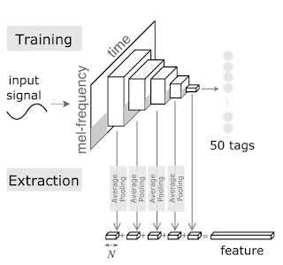

Ses Komutları Tanıma ve Aktarımlı Öğrenme (Transfer Learning)
Görüntüler üzerinde aktarımlı öğrenmeyi şu yazıda gördük. Acaba aynı yaklasım ses komutları için de kullanılabilir mi? Diyelim ki up (yukarı) ve down (aşağı) komutlarını öğrenmek lazım, ve elde 4000 civarı 1 saniyelik ses kayıtları var, bu kayitlar up ve down kelimelerini farklı şekillerde söylemiş olan kişilerin kayıtları.
Görüntü yazısındaki gibi özellik çıkartımı yapmak iyi olabilir. O zaman önceden eğitilmiş bir YSA bulmamız lazım. Alttaki bağlantılar
https://arxiv.org/abs/1703.09179
https://github.com/keunwoochoi/transferlearningmusic
Bu tür bir YSA'dan bahsediyor. İlginç bir durum, YSA müzik verisi üzerinde eğitilmiş, müzik kayıtlarını 50 kategoriye ayirmak icin kullanilmış. Kategoriler müziği bir şekilde sınıflayan özellikler, mesela müziğin enstrumental olup olmadığı, hangi döneme ait olduğu, vs...
YSA ağırlık dosyası (üstteki bağlantıdan da indirilebilir)
https://drive.google.com/open?id=17e_4Nl8P91VdNVCsJ0UiHveFR-ZpoxJH
_________________________________________________________________
Layer (type) Output Shape Param #
=================================================================
melgram (Melspectrogram) (None, 96, None, 1) 287840
_________________________________________________________________
normalization2d_1 (Normaliza (None, 96, None, 1) 0
_________________________________________________________________
conv2d_1 (Conv2D) (None, 96, None, 32) 320
_________________________________________________________________
batch_normalization_1 (Batch (None, 96, None, 32) 128
_________________________________________________________________
elu_1 (ELU) (None, 96, None, 32) 0
_________________________________________________________________
MP_1 (MaxPooling2D) (None, 48, None, 32) 0
_________________________________________________________________
conv2d_2 (Conv2D) (None, 48, None, 32) 9248
_________________________________________________________________
batch_normalization_2 (Batch (None, 48, None, 32) 128
_________________________________________________________________
elu_2 (ELU) (None, 48, None, 32) 0
_________________________________________________________________
MP_2 (MaxPooling2D) (None, 16, None, 32) 0
_________________________________________________________________
conv2d_3 (Conv2D) (None, 16, None, 32) 9248
_________________________________________________________________
batch_normalization_3 (Batch (None, 16, None, 32) 128
_________________________________________________________________
elu_3 (ELU) (None, 16, None, 32) 0
_________________________________________________________________
MP_3 (MaxPooling2D) (None, 8, None, 32) 0
_________________________________________________________________
conv2d_4 (Conv2D) (None, 8, None, 32) 9248
_________________________________________________________________
batch_normalization_4 (Batch (None, 8, None, 32) 128
_________________________________________________________________
elu_4 (ELU) (None, 8, None, 32) 0
_________________________________________________________________
MP_4 (MaxPooling2D) (None, 4, None, 32) 0
_________________________________________________________________
conv2d_5 (Conv2D) (None, 4, None, 32) 9248
_________________________________________________________________
batch_normalization_5 (Batch (None, 4, None, 32) 128
_________________________________________________________________
elu_5 (ELU) (None, 4, None, 32) 0
_________________________________________________________________
MP_5 (MaxPooling2D) (None, 1, None, 32) 0
_________________________________________________________________
MP (GlobalMaxPooling2D) (None, 32) 0
_________________________________________________________________
dense_1 (Dense) (None, 50) 1650
=================================================================
Total params: 327,442
Trainable params: 39,282
Non-trainable params: 288,160
YSA'da Melspectrogram tipi bir katman görüyoruz. Bu katman türü TensorFlow'da da var (zaten Keras arka plan motor olarak TF kullanabilir), yani direk TF hesap çizitinde Melspectrogram, spektogram, frekans hesabı yapabilen düğümler olabiliyor. Bu gibi hesaplar ses tanıma bağlamında genelde önişlem (preprocessing) evresinden apayrı kodlarla yapılırdı, fakat TF ve Keras'ta direk YSA'nın parçası haline gelebiliyorlar. İyi bir özellik.
Devam edelim, up/down ses komutlarini iceren dosya altta (başka bir konuşma tanımı yazısında kullanılan aynı ham veri)
https://drive.google.com/open?id=1BIGj3NtUZfSrXMaJ8hCqsz0UzS01MSrF
Bu dosyadaki up/down ses kayıtlarını alıp YSA'ya teker teker vereceğiz, özellik çıkartımı yaptıracağız, ve bu özellik vektörlerini lojistik regresyon üzerinden eğitip, sınıflayacağız.
Özellik üretimi için bir yaklaşım üstteki yazıda anlatılıyor. YSA'nın ara katmanlarına bakıyoruz, hatırlanırsa çiçekli görüntü örneğinde en sondan iki önceki tek katman kullanılmıştı, bu yaklaşımda önceki ara katmanlardan birkaç tanesi yanyana koyularak özellik vektörü üretilmis (ELU tipindeki katmanlar). Aslında mantıklı, farklı seviyelerdeki katmanlar farklı şekillerde ses temsil etme kabiliyetini kazanmış olacaktır, tüm bu kabiliyetleri birarada kullanmak faydalı olabilir.
from keras import backend as K
from keras.models import Model
from keras.layers import GlobalAveragePooling2D as GAP2D
from keras.layers import concatenate as concat
import keras, kapre
import numpy as np
model = keras.models.load_model('music_tag_model_best.hdf5',
custom_objects={'Melspectrogram':kapre.time_frequency.Melspectrogram,
'Normalization2D':kapre.utils.Normalization2D})
print (model.summary())
feat_layer1 = GAP2D()(model.get_layer('elu_1').output)
feat_layer2 = GAP2D()(model.get_layer('elu_2').output)
feat_layer3 = GAP2D()(model.get_layer('elu_3').output)
feat_layer4 = GAP2D()(model.get_layer('elu_4').output)
feat_layer5 = GAP2D()(model.get_layer('elu_5').output)
feat_all = concat([feat_layer1, feat_layer2, feat_layer3, feat_layer4, feat_layer5])
feat_extractor = Model(inputs=model.input, outputs=feat_all)
import scipy.io.wavfile, zipfile, pickle
import io, time, os, random, re
zfile = "voice_cmd_medium.zip"
z = zipfile.ZipFile(zfile)
data = []
labels = []
files_orig = list(z.namelist())
for x in files_orig:
try:
if ".wav" in x and ("down" in x or "up" in x):
f = z.open(x)
print (f.name)
wav = io.BytesIO(f.read())
v = scipy.io.wavfile.read(wav)
v = v[1].reshape((1,16000))
v = np.tile(v, (1,6))
v = v.reshape((1,1,16000*6))
feat = feat_extractor.predict(v, batch_size=1)
feat = feat[0]
if "down/" in f.name:
labels.append(1)
else:
labels.append(0)
data.append(feat)
except ValueError as e:
print (repr(e))
pass
pickle.dump((data,labels),open("voice_command_feat.pkl","wb"))
Eğitim kodunu test ederken bir pürüz ortaya çıktı: Girdi olarak bizim eğitim verimizde 16000 büyüklüğünde 1 saniyelik ses kayıtları var. Fakat üstteki YSA 6 saniyelik 16000*6 büyüklüğünde bir vektör bekliyor. Durumu kurtarmak için bizim verideki bir saniyelik ham veriyi 6 kez yanyana kopyalayarak YSA'nın beklediği hale getirdik. Yani her "up" sesi "up up up up ..." haline gelmiş oldu. Bu çok dert değil, sonuçta aynı sesi tekrarlamış oluyoruz, hem eğitim hem test verisi bizim kontrolümüzde olduğuna göre bu kopyalama işlemini istediğimiz gibi yapabiliriz. Ayrıca YSA 6 saniyelik veri için hazırsa çok daha uzun konuşmaları tanımak için ileride hazırız demektir.
Üstteki özellikleri kullanarak lojistik regresyon
import pickle
data,labels = pickle.load(open("voice_command_feat.pkl","rb"))
from sklearn.model_selection import train_test_split
x_train, x_test, y_train, y_test = train_test_split(data, labels, random_state=42, test_size=0.4)
from sklearn.linear_model import LogisticRegression, SGDClassifier
clf = LogisticRegression()
clf.fit(x_train, y_train)
print (clf.score(x_test,y_test))
Sonuç doğrulama verisi üzerinde yüzde 94.
Yani ses komutunu bırakalım, müzik üzerinde, ve müziğin tipini kategorize etme amaçlı yazılmış bir YSA'yı özellik üretici olarak kulladık ve bu özellikleri lojistik regresyonla apayrı ses komutlarını sınıflama için kullanabildik. Aktarımlı öğrenme hakikaten kuvvetli bir yaklaşım.
